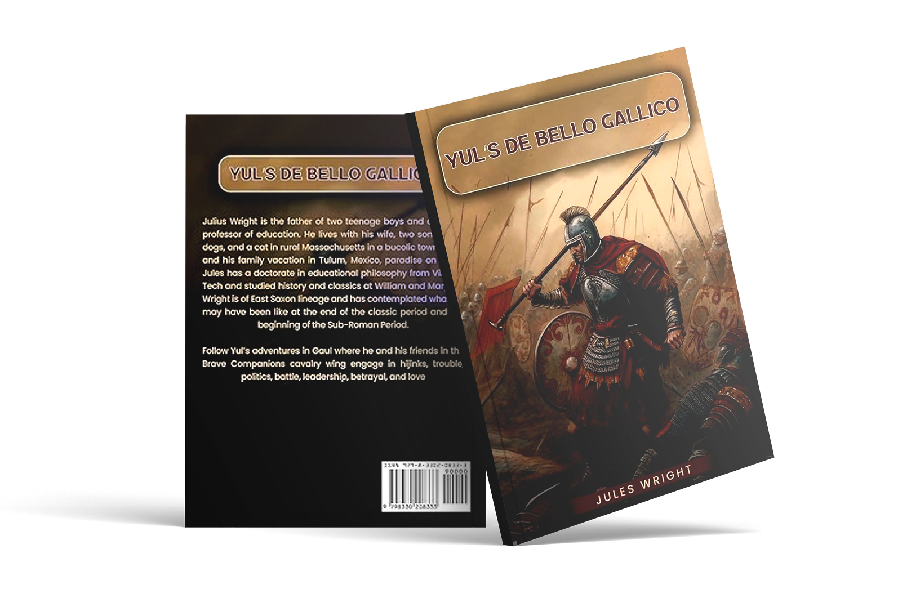
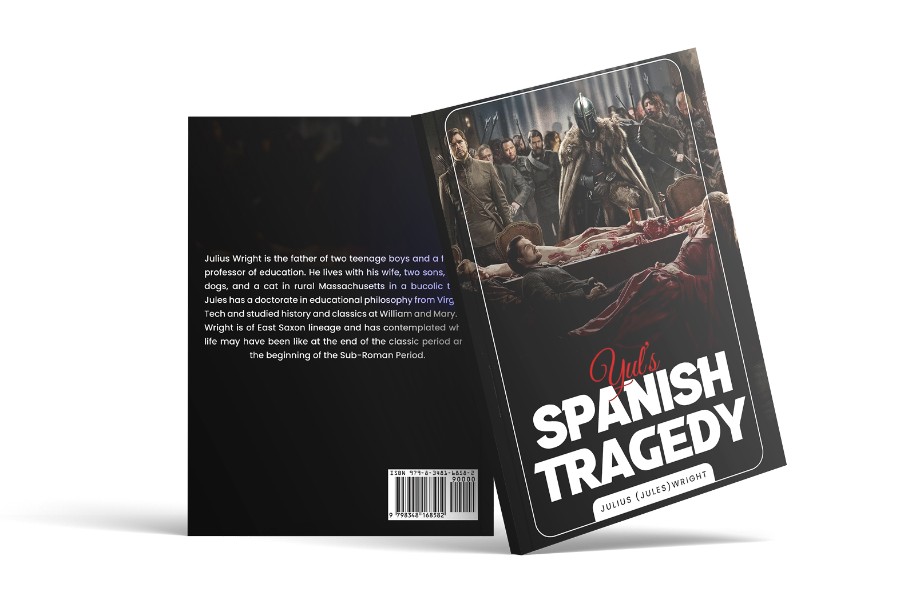

About Book
The Roman Empire is coming apart at the seams, relying on German recruits and foederati to hold the empire together. The eastern and western empires are ruled by incompetent young men who allow their German warlords to rule for them, but imperial elites conspire against the generals. Yul the Younger is a Saxon boy negotiating life in the empire with strong ties to his family in Germania.
Yul the Younger is a Saxon boy negotiating life in the empire with strong ties to his family in Germania. As he grows, he finds himself at the center of a world in transition, where the old gods and the new religion clash, and where loyalty is often a death sentence.
Jules Wright, an acclaimed author, artfully intertwines academic depth into his narratives, providing readers with a captivating journey that harmonizes intellectual engagement and emotional resonance seamlessly.

Our Publishing Platforms
Yul's De Bello Gallico
Do you yearn for adventure, battle, love, and romance? Do you want to know more about the collapse of the Western Roman Empire and the rise of barbarian kingdoms? Join soldiers and authors across third-century Gaul! Meet old friends and make new ones as they seek out their lives in a changing world.
The year was AD 354 and Gaul was in turmoil. Brigands and forest tribes raided the countryside. Civil war and intrigue swept the imperial court at Milan. Caesar Julian was sent to Gaul to restore the frontier. Dr. Wright's latest work, based on first-hand accounts, will immerse you in this world of adventure and conflict.

Our Publishing Platforms
Yul's Spanish Tragedy
Do you yearn for adventure, battle, love, and romance? Do you want to know more about the collapse of the Western Roman Empire and the rise of barbarian kingdoms? Join soldiers and authors across third-century Gaul! Meet old friends and make new ones as they seek out their lives in a changing world.
The year was AD 354 and Gaul was in turmoil. Brigands and forest tribes raided the countryside. Civil war and intrigue swept the imperial court at Milan. Caesar Julian was sent to Gaul to restore the frontier. Dr. Wright's latest work, based on first-hand accounts, will immerse you in this world of adventure and conflict.

Our Publishing Platforms
Get in touch
Don’t hesitate to contact with us for any inquiries.